Formati Barcode: costruire EAN13, CODE 128 e QR Code
Target: tecnico installatore / rivenditore.
Obiettivo
Sapere dove si trovano i formati dei codici a barre, copiare e rinominare un formato EAN13, cambiare la composizione dei suoi campi (per esempio per ottenere un EAN a peso) e conoscere i formati CODE 128, GS1-128 e QR Code, anch'essi personalizzabili.
Prerequisiti
- I barcode di default sono scelti nella Configurazione Operativa: campi Barcode => Vendita (valore 2) e Barcode => Multipesata (valore 6).
- Un barcode si può anche assegnare al singolo articolo: vedi Articoli PLU, scheda Barcode.
Come ragiona la bilancia
I barcode sono archiviati come formati numerati. Ogni formato è l'elenco dei campi che compongono il codice, nell'ordine in cui vengono stampati. I formati forniti di default si possono usare così come sono oppure copiare e adattare: la costruzione del codice è sempre personalizzabile.
Passaggi
1. Apri Formati Barcode
Dal menu Setup Bilancia tocca Formati Barcode. Le voci sono Formati Barcode EAN13, Formati Barcode CODE 128, Formati QRCODE, Formati Barcode GS1-128 e Composizione QRCode Data Collect.
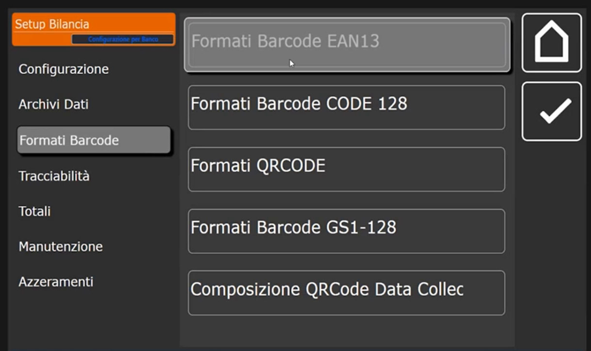
2. Consulta i formati EAN13 di default
Tocca Formati Barcode EAN13. La lista ha le colonne ID Barcode e Descrizione.
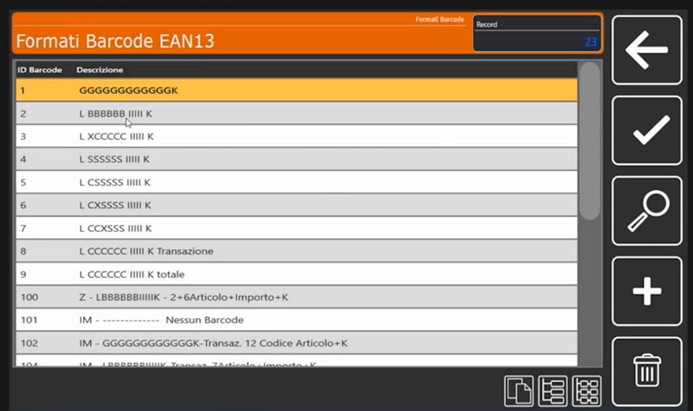
Le sigle della descrizione sono solo un nome
Le descrizioni di default (per esempio L BBBBBB IIII K) ricalcano la storia dell'archivio delle bilance Italiana Macchi e servono a riconoscere il formato a colpo d'occhio. Sono solo un nome: non c'è l'obbligo di rispettarle e il contenuto reale del codice dipende dai campi del formato.
3. Copia un formato e dagli un nome
Per non modificare i formati di default, parti da una copia.
-
Seleziona il formato da copiare, per esempio il 2.
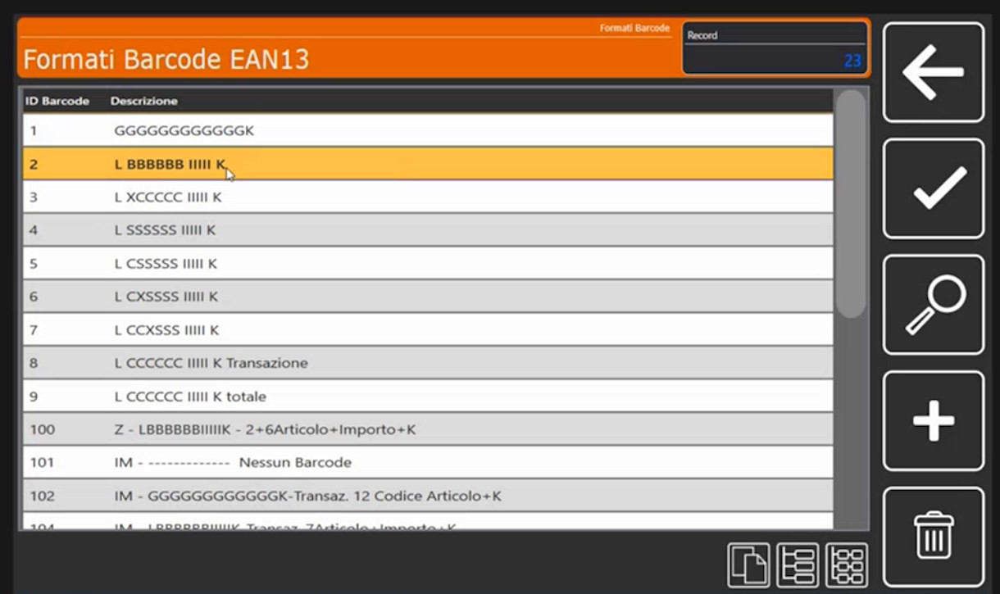
-
Copialo in un nuovo numero libero, per esempio 11, con l'icona di copia in basso a destra: nella lista compare la nuova riga 11, ancora con la descrizione del formato 2.
-
Apri il formato 11 e tocca Descrizione: scrivi il nome che preferisci (nell'esempio MIO).
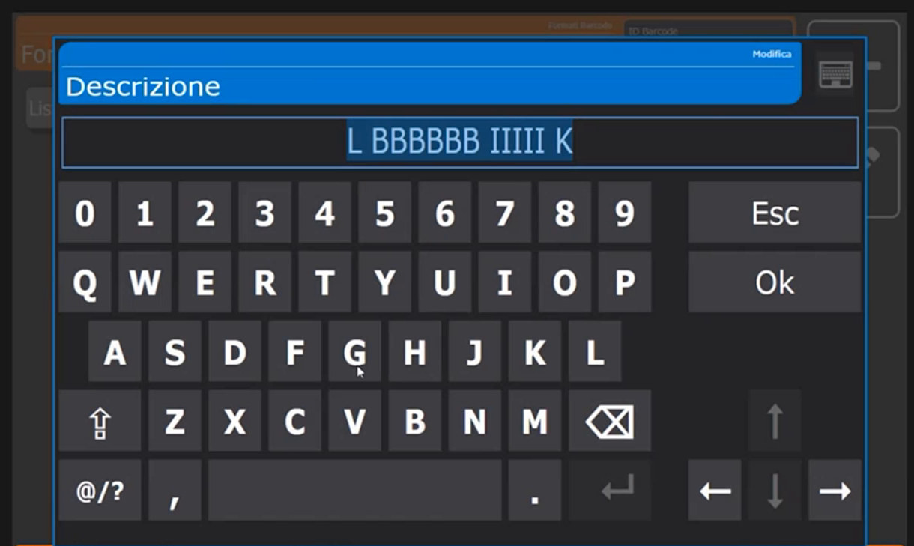
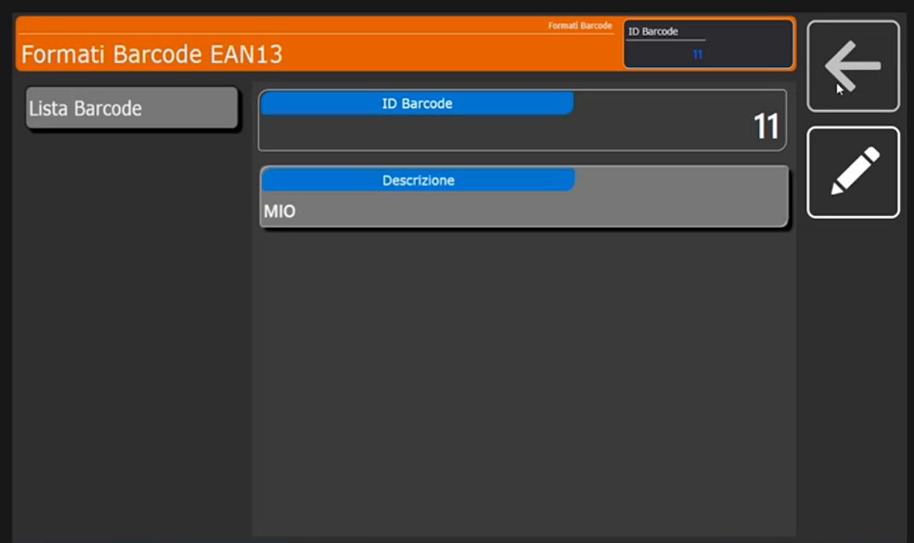
La lista contiene ora il formato 11 MIO.
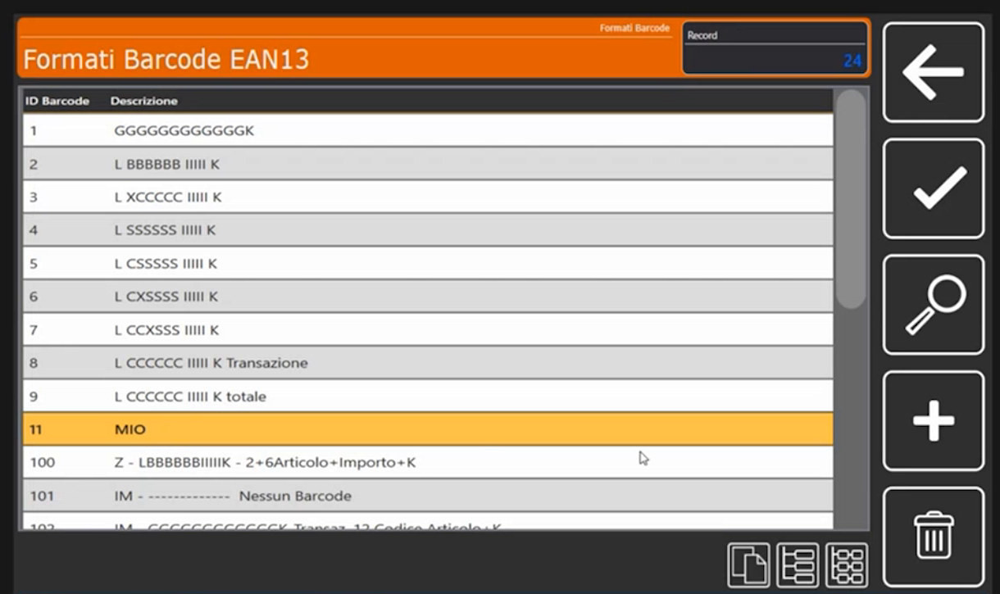
4. Leggi la composizione del barcode
Apri il formato 11: compare l'elenco dei campi che formano il codice, con le colonne Posizione, Descrizione e Tipo.
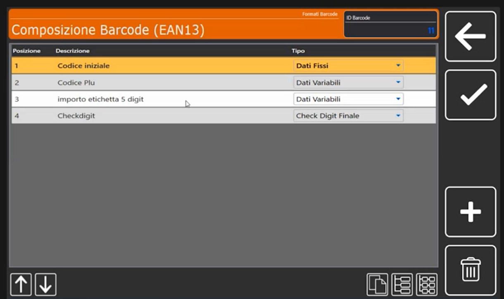
| Posizione | Descrizione | Tipo |
|---|---|---|
| 1 | Codice iniziale | Dati Fissi |
| 2 | Codice Plu | Dati Variabili |
| 3 | importo etichetta 5 digit | Dati Variabili |
| 4 | Checkdigit | Check Digit Finale |
Il formato qui descritto è un EAN13 a importo: 1 cifra fissa, 6 cifre di codice PLU, 5 cifre di importo e 1 cifra di controllo, per un totale di 13 cifre.
Ogni campo si apre in Composizione Barcode (EAN13), sezione Campo Barcode:
-
Campo 1, codice iniziale. È un codice fisso: il Tipo Campo è Dati Fissi e il Testo Fisso / Caratteri Speciali vale 2.
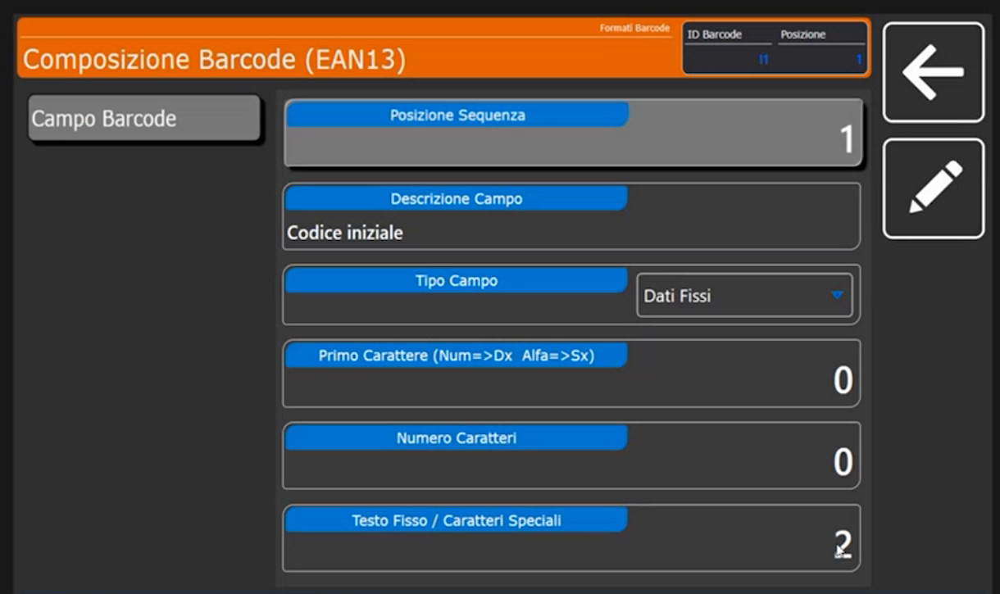
-
Campo 2, codice PLU. Il Tipo Campo è Dati Variabili. Si regolano il Numero Caratteri (qui 6), il Primo Carattere (qui 12; l'etichetta del campo ricorda che i valori numerici si allineano a destra e quelli alfanumerici a sinistra) e l'Origine Dato Variabile, cioè da dove la bilancia prende il valore.
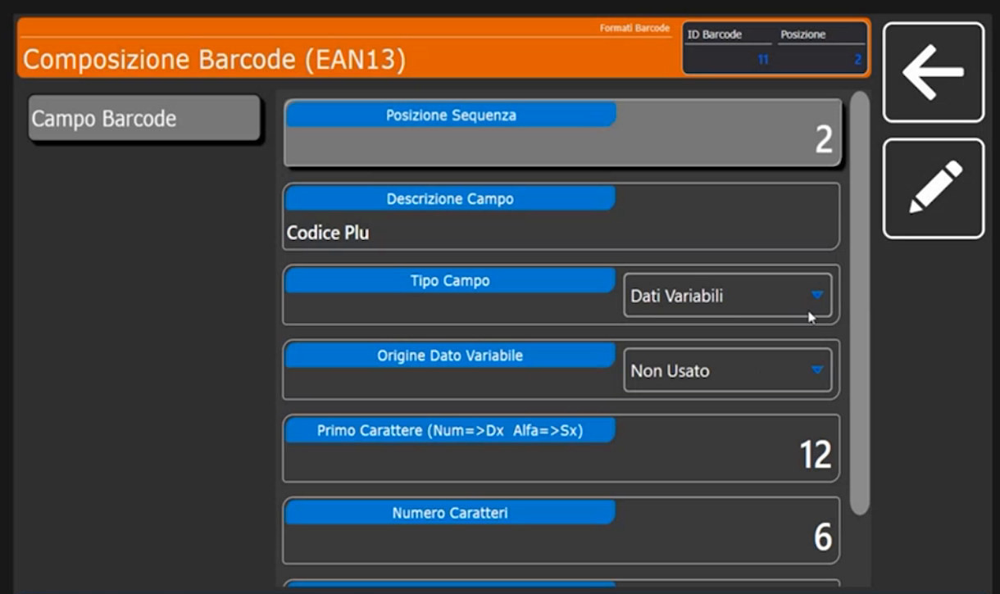
-
Campo 4, check digit. È necessario ed è sempre l'ultimo campo (Check Digit Finale).
5. Cambia l'origine dei dati: l'EAN a peso
Il campo 3 contiene l'importo: la sua Origine Dato Variabile è Importo Transazione, con Primo Carattere 5 e Numero Caratteri 5. Il menu a tendina mostra le origini disponibili:
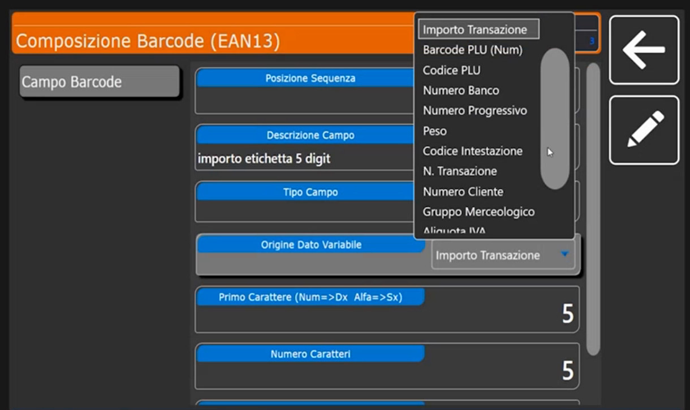
Importo Transazione, Barcode PLU (Num), Codice PLU, Numero Banco, Numero Progressivo, Peso, Codice Intestazione, N. Transazione, Numero Cliente, Gruppo Merceologico, Aliquota IVA e altre voci che si raggiungono scorrendo l'elenco.
EAN a peso
Se questo campo deve riportare non l'importo ma il peso della transazione, scegli l'origine Peso: il barcode diventa un EAN a peso. Con lo stesso criterio si può costruire un codice che porti banco, progressivo, numero cliente, gruppo merceologico o aliquota IVA.
6. CODE 128, GS1-128 e QR Code
Oltre all'EAN13 sono disponibili, e personalizzabili, i formati CODE 128 e GS1-128 e i formati del QR Code. In Composizione QRCode Data Collect sono già presenti due formati:
| ID Formato | Descrizione | Note |
|---|---|---|
| 1 | QrCode Classic ECR | È il formato classico, usato nel 90% dei casi |
| 2 | QrCode Bz | Emulazione Bizerba: prevede un'intestazione e un fine tracciato |
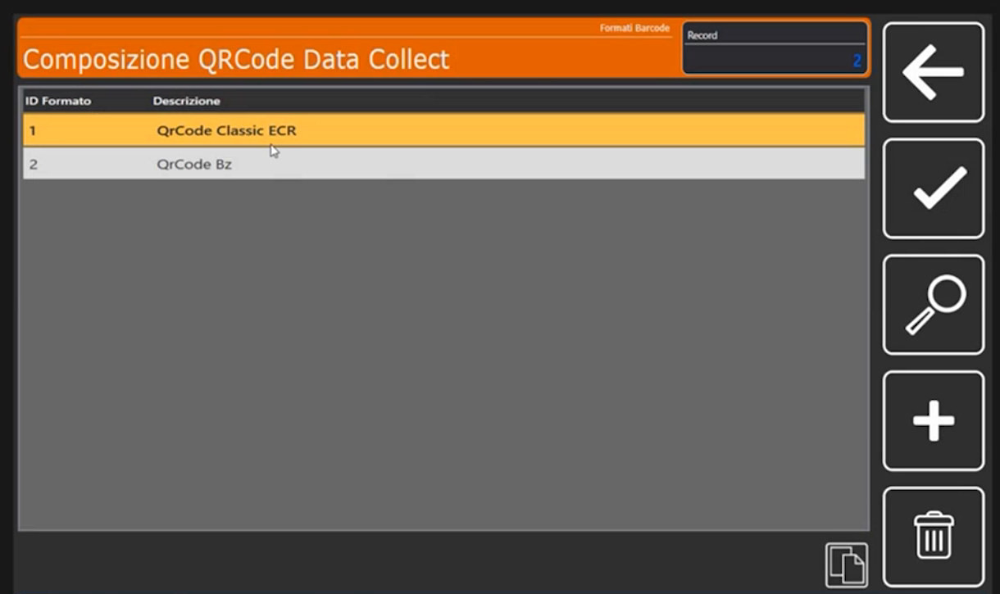
Anche per il QR Code puoi copiare un formato e personalizzarlo.
Verifica
Nella lista dei formati EAN13 è presente il formato 11 MIO, con i quattro campi (codice iniziale, codice PLU, importo, check digit). Per usarlo come barcode di vendita imposta il suo numero in Configurazione Operativa oppure nella scheda Barcode del singolo articolo.
Errori comuni
| Problema | Causa probabile | Rimedio |
|---|---|---|
| Il barcode stampato non è quello atteso | Il formato è assegnato in un punto diverso da quello modificato (configurazione generale o scheda Barcode dell'articolo) | Controlla dove è impostato il numero del formato: la scheda dell'articolo prevale sulla configurazione generale |
| Si è modificato un formato di default | Il formato non è stato copiato prima | Crea una copia in un numero libero e lavora sulla copia |
Controllo sulla lunghezza
Un EAN13 è composto da 13 cifre: dopo ogni modifica verifica Primo Carattere e Numero Caratteri di ciascun campo, in modo che il totale resti 13.
Prossimi argomenti
Per costruire un'etichetta che stampi il barcode vedi Formati Etichetta.